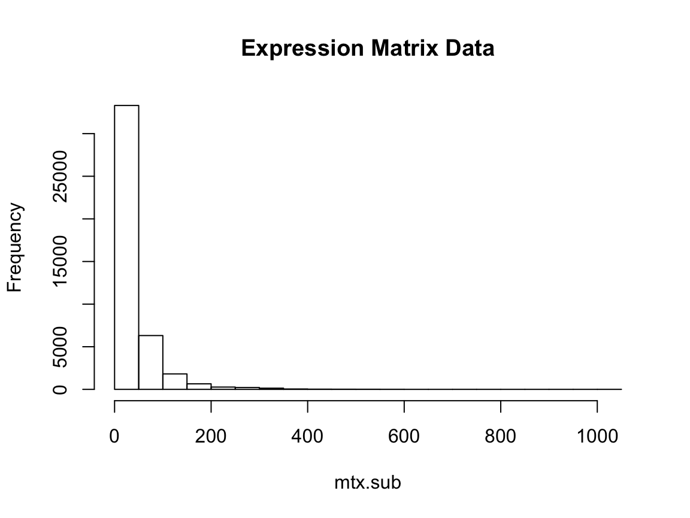
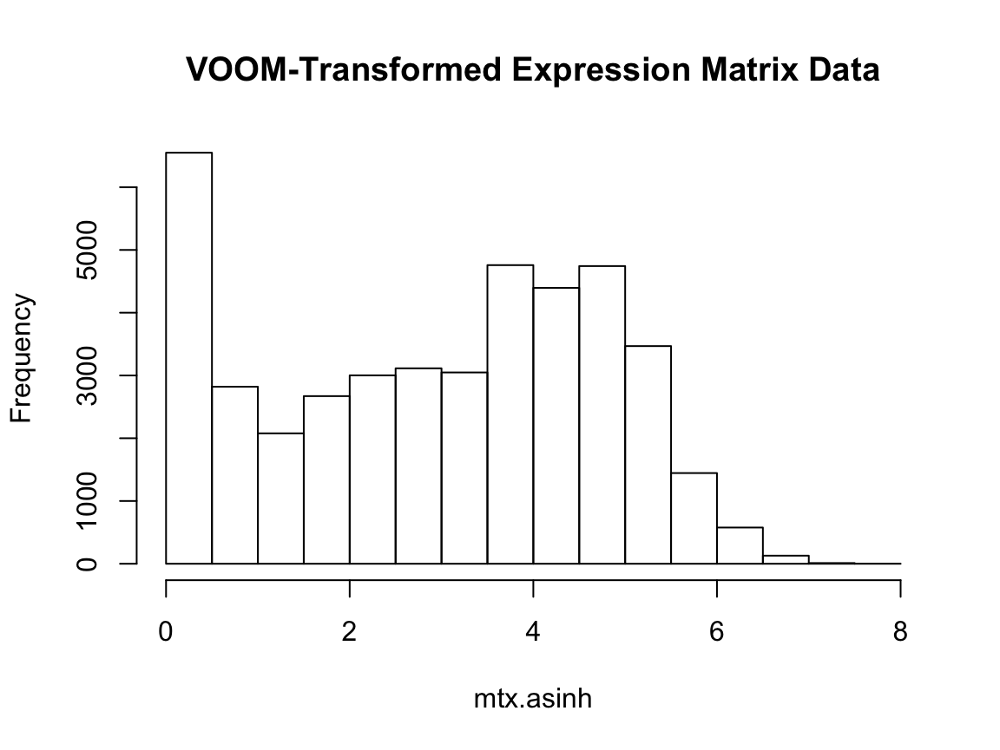

TReNA_Vignette.RmdTReNA is a package for inferring relationships between target genes and their candidate regulators. By using TReNA, we can generate hypotheses around regulation of gene expression and enable the construction of gene network models. In the most basic sense, TReNA provides two operations using the data. First, it filters putitive transcriptional regulators based on user-specified criteria, such as presence of motifs or footprints. Second, given a matrix of gene expression data (that must include the expression levels of transcription factors), a target gene, and list of candidate regulators as predictors, it uses a user-specified solver to perform feature selection. Thus, the standard TReNA workflow is the following:
The filtering step, while technically optional, can constrain the solution space and reduce computational time by reducing the number of predictors supplied to the solver. Rather than supplying hundreds of transcription factors that can obscure meaningful relationships between genes, filters allow the user to screen out less likely candidates, leaving only the most likely affectors.
Starting off, we’ll load the TReNA library.
library(trena)Running the solvers in TReNA requires a matrix of gene expression data; there are several example data sets included with the TReNA package. In this case, we will load data from a study on Alzheimer’s disease (Nat Sci Data, doi:10.1038/sdata.2016.89), in which 278 samples were obtained for 154 transcription factors.
load(system.file(package="trena", "extdata/ampAD.154genes.mef2cTFs.278samples.RData"))This gives us a matrix, mtx.sub, that contains our gene expression data in units of TMM. Before proceeding further , it is wise to inspect the distribution of the matrix and consider using some sort of data transformation to normalize the mean-variance relationship. We can see, for instance, that our dataset is fairly skewed, with most of the expression values falling close to 0 and only a few values on the higher end of the spectrum.

The skewed nature of the matrix may profoundly affect our results. To overcome this, we will transform our matrix using the hyperbolic arcsine (asinh) function
mtx.asinh <- asinh(mtx.sub)If we now plot our transformed matrix, we can see that it’s been scaled down substantially.

In general, we recommend a transformation of this nature to adjust skewed data. The voom transformation or something similar (e.g. asinh()) adjusts the mean-variance relationship and can greatly change the results we see. Moving forward, we will use this transformed data set in the rest of our analyses.
Trena ClassThe most straightforward way to filter candidates and perform feature selection is by constructing a Trena object.
TReNA currently supports 4 different candidate transcription factor inputs, all of which are subclasses of the CandidateFilter class:
VarianceFilter: returns transcription factors with expression variance within a certain range of the target gene’s expression varianceGeneOntologyFilter: given an organism database and a Gene Ontology term (GOterm), returns only those genes that match the GOtermHumanDHSFilter: given a genome database, DNAse hypersensitivity (DHS) database, and region specifications, return only those genes that fall within the given regionFootprintFilter: using a PostgreSQL or SQLite database of footprint data, returns transcription factors with footprints for a given target gene for a specified genomic rangeIn order to get a list of transcription factor candidates, you must construct the appropriate object by supplying the necessary parameters for that CandidateFilter, then call the getCandidates() method on the candidate inputs. In each case, the call to getCandidates() is identical and operates on only the CandidateFilter object.
VarianceFilter SubclassThe VarianceFilter requires the specification of the expression matrix and a target gene, plus it allows you to optionally specify a variance size range. It finds the variance of all genes in the assay matrix, then returns all transcription factors with variance within the variance size range of the target gene. For instance, we can create a VarianceFilter and use it to find all transcription factors with variance within 50% of the target gene’s variance. This will return a named list with both the names of the transcription factors and their variances.
variance.filter <- VarianceFilter(mtx.assay = mtx.asinh, targetGene = "MEF2C", varSize = 0.5)
tf.list <- getCandidates(variance.filter)
str(tf.list)## List of 2
## $ tfs : chr [1:36] "BCL6" "BCL6B" "CREB5" "CUX2" ...
## $ tf.vars: Named num [1:36] 0.23 0.479 0.28 0.501 0.248 ...
## ..- attr(*, "names")= chr [1:36] "BCL6" "BCL6B" "CREB5" "CUX2" ...FootprintFilter SubclassThe most complex filter is the FootprintFilter, which leverages information from footprint databases in either SQLite or PostgreSQL. This input requires connection to 2 databases: 1) A genome database, which contains information on the location and function of genes; 2) A project database, which contains footprint regions from a specific project. As an illustration of the format and utility of these databases, we have included in extdata two SQLite databases demonstrating the required tables and information needed to use the FootprintFilter. Our databases are subsets of larger databases, corresponding to the MEF2C gene and a footprinting project in the brain using the Wellington method for determining footprints.
In addition to the databases, constructing a FootprintFilter object requires a data frame of regions to look in for footprints. When the getCandidates method is run, the FootprintFilter returns a dataframe containing the footprints in the supplied regions, including the names of motifs for those footprints.
# Sp
db.address <- system.file(package="trena", "extdata")
genome.db.uri <- paste("sqlite:/",db.address,"mef2c.neighborhood.hg38.gtfAnnotation.db", sep = "/")
project.db.uri <- paste("sqlite:/",db.address,"mef2c.neigborhood.hg38.footprints.db", sep = "/")
# Create the specs for the MEF2C gene region
tss <- 88904257
start <- tss - 1000
end <- tss + 1000
chrom <- "chr5"
gene.regions <- data.frame(chrom=chrom,
start=start,
end=end,
stringsAsFactors = FALSE)
# Create a filter using the geneCenteredSpec option
footprint.filter <- FootprintFilter(genomeDB = genome.db.uri, footprintDB = project.db.uri,
regions = gene.regions)
# Run the getCandidates method
tbl <- getCandidates(footprint.filter)[[1]]
str(tbl)## 'data.frame': 142 obs. of 19 variables:
## $ loc : chr "chr5:88903266-88903276" "chr5:88903286-88903306" "chr5:88903292-88903305" "chr5:88903293-88903321" ...
## $ chrom : chr "chr5" "chr5" "chr5" "chr5" ...
## $ start : int 88903266 88903286 88903292 88903293 88903296 88903301 88903301 88903302 88903302 88903304 ...
## $ endpos : int 88903276 88903306 88903305 88903321 88903313 88903315 88903317 88903314 88903314 88903316 ...
## $ fp_start : int 88903247 88903303 88903303 88903303 88903303 88903303 88903303 88903303 88903303 88903303 ...
## $ fp_end : int 88903270 88903328 88903328 88903328 88903328 88903328 88903328 88903328 88903328 88903328 ...
## $ type : chr "motif.in.footprint" "motif.in.footprint" "motif.in.footprint" "motif.in.footprint" ...
## $ motifName : chr "NA-SwissRegulon-FOXN1.SwissRegulon" "Scerevisiae-UniPROBE-Sfp1.UP00342" "Mmusculus-jaspar2016-Arid5a-MA0602.1" "NA-SwissRegulon-ZBTB16.SwissRegulon" ...
## $ length : int 11 21 14 29 18 15 17 13 13 13 ...
## $ strand : chr "+" "+" "+" "-" ...
## $ sample_id : chr "ENCSR000DBW" "ENCSR318PRQ" "ENCSR318PRQ" "ENCSR318PRQ" ...
## $ method : chr "WELLINGTON" "WELLINGTON" "WELLINGTON" "WELLINGTON" ...
## $ provenance: chr "brain_wellington_20.minid" "brain_wellington_20.minid" "brain_wellington_20.minid" "brain_wellington_20.minid" ...
## $ score1 : num -4.73 -23.15 -23.15 -23.15 -23.15 ...
## $ score2 : num 11.13 11.7 10.75 9.65 10.51 ...
## $ score3 : num 8.86e-05 3.77e-05 9.27e-05 6.97e-05 8.39e-05 6.91e-05 4.58e-05 4.22e-06 4.22e-06 9.15e-05 ...
## $ score4 : num NA NA NA NA NA NA NA NA NA NA ...
## $ score5 : num NA NA NA NA NA NA NA NA NA NA ...
## $ score6 : num NA NA NA NA NA NA NA NA NA NA ...A FootprintFilter will only retrieve footprints and their motifs; to associate these motifs with transcription factors, we recommend using the MotifDb package, which is already required for trena. The associateTranscriptionFactors adds the transcription factors, which can then be used later as candidate regulators. To do this, we’ll just have to change the name of the motif column from name to motifName
library(MotifDb)
tbl.tfs <- associateTranscriptionFactors(MotifDb, tbl, source="MotifDb", expand.rows=TRUE)
str(tbl.tfs)## 'data.frame': 151 obs. of 23 variables:
## $ motifName : chr "Ggallus-jaspar2016-LIN54-MA0619.1" "Hsapiens-HOCOMOCOv10-ARI3A_HUMAN.H10MO.D" "Hsapiens-HOCOMOCOv10-ARI3A_HUMAN.H10MO.D" "Hsapiens-HOCOMOCOv10-ARI3A_HUMAN.H10MO.D" ...
## $ loc : chr "chr5:88903373-88903381" "chr5:88903368-88903389" "chr5:88903305-88903326" "chr5:88903334-88903355" ...
## $ chrom : chr "chr5" "chr5" "chr5" "chr5" ...
## $ start : int 88903373 88903368 88903305 88903334 88903311 88903308 88903311 88903308 88903351 88903377 ...
## $ endpos : int 88903381 88903389 88903326 88903355 88903327 88903324 88903327 88903317 88903360 88903390 ...
## $ fp_start : int 88903378 88903378 88903303 88903327 88903327 88903303 88903303 88903303 88903327 88903378 ...
## $ fp_end : int 88903403 88903403 88903328 88903352 88903352 88903328 88903328 88903328 88903352 88903403 ...
## $ type : chr "motif.in.footprint" "motif.in.footprint" "motif.in.footprint" "motif.in.footprint" ...
## $ length : int 9 22 22 22 17 17 17 10 10 14 ...
## $ strand : chr "+" "-" "+" "-" ...
## $ sample_id : chr "ENCSR318PRQ" "ENCSR318PRQ" "ENCSR318PRQ" "ENCSR000DBW" ...
## $ method : chr "WELLINGTON" "WELLINGTON" "WELLINGTON" "WELLINGTON" ...
## $ provenance: chr "brain_wellington_20.minid" "brain_wellington_20.minid" "brain_wellington_20.minid" "brain_wellington_20.minid" ...
## $ score1 : num -25.9 -25.9 -23.1 -9.6 -9.6 ...
## $ score2 : num 11.35 16.76 8.93 16.46 11.01 ...
## $ score3 : num 9.18e-05 1.18e-06 8.28e-05 1.47e-06 1.53e-05 2.87e-05 1.53e-05 7.87e-05 7.87e-05 3.79e-05 ...
## $ score4 : num NA NA NA NA NA NA NA NA NA NA ...
## $ score5 : num NA NA NA NA NA NA NA NA NA NA ...
## $ score6 : num NA NA NA NA NA NA NA NA NA NA ...
## $ geneSymbol: chr "LIN54" "ARI3A" "ARI3A" "ARI3A" ...
## $ pubmedID : chr "24194598" "26586801" "26586801" "26586801" ...
## $ organism : chr "Ggallus" "Hsapiens" "Hsapiens" "Hsapiens" ...
## $ source : chr "MotifDb" "MotifDb" "MotifDb" "MotifDb" ...The FootprintFilter supports use of either PostgreSQL and SQLite databases in a specific 2-table schema. In the previous example, we used an SQLite database included in the package; essentially a small snapshot of a larger dataset. More usefully, there are now publically available databases of footprints for use at bddsrds.globusgenomics.org. For an updated table of these databases, please refer to trena.org.
Solver ObjectOnce you know your candidate regulators and you’ve got a target gene in mind, you’re ready to construct a Solver object. A Solver object is a construct that contains the expression matrix, candidate regulators, target gene, and a solver method of choice. . TReNA currently supports 9 different solvers. Their associated solvers strings for use in TReNA are (in no particular order):
glmnet using alpha = 0.9 as the default elastic net parameterglmnet using alpha = 0 as the default elastic net parametervbsr, the Bayes Spike function from the vbsr packageslim function from the flare package, with q = 2
lassopv, the P-Value LASSO functioncor function using the default parameterscor function using method = "spearman"
BayesSpikeSolver and SqrtLassoSolver
When it comes to selecting a solver, we recommend doing some critical thinking about which solver most suits your purposes before choosing. Each of solvers has its own strengths and weaknesses that we will not delve into here, but that are generally detailed within their own packages. To begin with, we will use the LassoSolver, which uses LASSO regularlized regression to select features. Once a solver has been chosen, the particular Solver object is simply specified:
lasso.solver <- LassoSolver(mtx.assay = mtx.asinh,
targetGene = "MEF2C",
candidateRegulators = tbl.tfs$geneSymbol
)We have now created an object of the LassoSolver class, which in this case uses “MEF2C” as the target gene and the candidate regulators we found using the FootprintFilter above. Regardless of the specific subclass, any Solver object can be executed using the run command:
## 'data.frame': 6 obs. of 2 variables:
## $ beta : num 1.215 -0.471 -0.325 -0.323 -0.211 ...
## $ intercept: num 2.1 2.1 2.1 2.1 2.1 ...The output of each run method can vary with solver type, but in general it will return the coefficients for each feature, in this case contained in the beta field. Notably, the LassoSolver, SqrtLassoSolver, and EnsembleSolver often return subsets of the supplied candidate regulators, whereas the remaining methods return coefficients for all regulators. This behavior can be tuned as well; for instance, we can alter the LassoSolver object by adjusting lambda, a tuning parameter that corresponds to the penalty imposed on regression coefficients.
First, we will alter a different parameter of the LassoSolver object, the keep.metrics parameter. This optional Boolean argument will return several parameters of the fit if specified as TRUE (default = FALSE), including the lambda value determined via permutation testing. We can see this behavior by creating and running this new LassoSolver object:
set.seed(10)
lasso.solver.keep <- LassoSolver(mtx.assay = mtx.asinh,
targetGene = "MEF2C",
candidateRegulators = tbl.tfs$geneSymbol,
keep.metrics = TRUE
)
tbl.keep <- run(lasso.solver.keep)
str(tbl.keep)## List of 3
## $ mtx.beta:'data.frame': 6 obs. of 2 variables:
## ..$ beta : num [1:6] 1.215 -0.471 -0.325 -0.323 -0.211 ...
## ..$ intercept: num [1:6] 2.1 2.1 2.1 2.1 2.1 ...
## $ lambda : num 0.0541
## $ r2 : Named num 0.648
## ..- attr(*, "names")= chr "1"As shown, we now get a list where the first element is our data frame from the previous example, the second is the value determined for lambda, and the final element is the value determined for \(r^{2}\). Notably, the keep.metrics argument is only available for the LassoSolver and RidgeSolver objects at this time.
Now we can change the value of lambda to change how many features are returned by the solver. In this case, we’ll make lambda much smaller; this will relax the penalty imposed on regression coefficients, thus we expect to get more features returned to us:
lasso.solver.lenient <- LassoSolver(mtx.assay = mtx.asinh,
targetGene = "MEF2C",
candidateRegulators = tbl.tfs$geneSymbol,
lambda = 0.05
)
tbl.lenient <- run(lasso.solver.lenient)
str(tbl.lenient)## 'data.frame': 6 obs. of 2 variables:
## $ beta : num 1.228 -0.484 -0.328 -0.326 -0.22 ...
## $ intercept: num 2.02 2.02 2.02 2.02 2.02 ...As expected, we get nearly twice as many features as in our original example. Different Solver subclasses have different optional arguments corresponding to their specific solver methods. For more information on Solver object, check the documentation for your object of interest; for more information on a particular solver method, check the original package referenced in the help documentation for that Solver object.
Each solver will necessarily give a different result, neccessitating some amount of thoughtfulness on the part of the user. For instance, if the goal is to return a sparse list of only the most influential genes, then LASSO may be the best choice. By contrast, using the Random Forest method will return scores for all genes, and will thus result in inferring more relationships.
In addition to the individual solvers, TReNA includes an ensemble approach as a solver option. The EnsembleSolver class allows the user to specify a vector of multiple TReNA solvers as part of the argument list (e.g. solverNames = c("lasso","ridge")). Alternatively, the user can leave this argument unspecified to run all solvers but Bayes Spike and square root LASSO (the most sensitive to outliers and the computationally intensive, respectively). Other solver-specific parameters may also be specified, such as the lambda value for LASSO; these additional arguments can be found in the help documentation for the EnsembleSolver
The EnsembleSolver also has a geneCutoff argument, whereby the run method cuts off a certain fraction of the total regulators supplied. For example, if 200 candidates are supplied and the geneCutoff is left at its default value (default = 0.1), only roughly 20 genes will be returned in the final data frame. The geneCutoff argument is designed to help the user hone in on only the most important features in a model, but it can be changed to 100% of the features if so desired. In cases of smaller sets of regulators, the cutoff will cease being imposed once the number of features drops below 10.
Besides computing and returning the individual scores of each solver, the ensemble solver generates an “extreme” score (pcaMax) and a “concordance” score (concordance) based on all solvers. Both of these new scores are computed using a principle component analysis on all individual solver scores and can perhaps best be understood as follows:
pcaMax essentially quantifies the extent to which dissimilar solvers agree on selecting a given feature. For instance, if Random Forest and LASSO both deem a particular feature important, then it is likely to have a high pcaMax score. By contrast, if Pearson and Spearman both deem a feature important, it would be less likely to have a high pcaMax score because the methods are quite similar to one another. The basic idea here is that if lots of dissimilar methods agree on the importance of a feature, it is more likely to actually be important.
concordance essentially weighs each solver equally and sums up the contributions from each one, regardless of method similarity. Thus, if Random Forst and LASSO both deem a particular feature important, it is equally likely to have a high concordance score as if Pearson and Spearman both deem a feature important. This score functions as more of a basic “voting” system of which solves consider a feature significant and ranges from 0-1.
We can see this in action by constructing and running an EnsembleSolver object with the default arguments for solverNames and geneCutoff:
ensemble.solver <- EnsembleSolver(mtx.assay = mtx.asinh,
targetGene = "MEF2C",
candidateRegulators = tbl.tfs$geneSymbol)
tbl.out <- run(ensemble.solver)
tbl.out## gene betaLasso lassoPValue pearsonCoeff rfScore betaRidge
## 1 FOXD2 -0.21708114 1.445129e-10 -0.33079230 13.416248 -0.16284694
## 2 FOXL1 0.00000000 1.715744e-01 -0.28854381 4.612113 -0.17832725
## 3 FOXO3 1.22390420 8.835747e-29 0.60182289 25.151960 0.81914024
## 4 LHX2 0.02875834 1.441601e-02 0.03071925 13.342908 0.04436311
## 5 POU4F1 -0.48012027 1.207097e-13 -0.45072667 9.667694 -0.49447608
## 6 SOX1 0.00000000 3.560877e-01 0.21491204 8.273583 0.10123560
## 7 SOX8 -0.32501563 3.743920e-24 -0.56932686 19.063225 -0.25916229
## 8 VSX1 -0.32711191 5.434800e-19 -0.48616195 14.473402 -0.25193017
## spearmanCoeff xgboost
## 1 -0.50926699 0.17490724
## 2 -0.28923902 0.02412531
## 3 0.66974449 0.27799407
## 4 -0.31090302 0.13903451
## 5 -0.44340246 0.05544559
## 6 0.06231521 0.05501908
## 7 -0.61869917 0.19198925
## 8 -0.47833418 0.08148496Note that in the final data frame, regulators are returned in descending order of pcaMax score. If we so choose, we can change the solverNames and geneCutoff as well; for this example, we’ll change them to just 4 solver methods and 100% of the genes, respectively:
ensemble.full <- EnsembleSolver(mtx.assay = mtx.asinh,
targetGene = "MEF2C",
candidateRegulators = tbl.tfs$geneSymbol,
solverNames = c("lasso","pearson","randomforest","ridge"),
geneCutoff = 1
)
tbl.full <- run(ensemble.full)
str(tbl.full)## 'data.frame': 8 obs. of 5 variables:
## $ gene : chr "FOXD2" "FOXL1" "FOXO3" "LHX2" ...
## $ betaLasso : num -0.19897 0 1.1962 0.00717 -0.45283 ...
## $ pearsonCoeff: num -0.3308 -0.2885 0.6018 0.0307 -0.4507 ...
## $ rfScore : num 12.75 4.79 25.63 12.74 9.57 ...
## $ betaRidge : num -0.1711 -0.18 0.8533 0.0487 -0.5109 ...As demonstrated, the full set of regulators here is 64; when using a 10% cutoff, we only get 9 features in the final model as the cutoff is designed to go into effect only for 10 or more features.
The ensemble approach is an attractive option for a couple of reasons:
Solver choice can be a non-trivial task for a TReNA user, as it requires some working knowledge of the pros and cons of the different methods. The ensemble method alleviates the need to choose one solver.
Different solvers will give different predictions for important transcription factors; the ensemble method provides a way to create a composite score that accounts for all included solvers and can thus be seen as something of an overall metric.
The relationship between transcription factors and target genes is a young area of active investigation. How this relates to the various solvers is an open question. TReNA was born out of a desire to explore these relationships.
Thus, if you are a first-time TReNA user, we recommend that you start with the EnsembleSolver as your Solver object of choice.